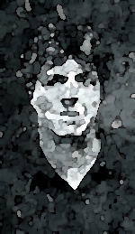

‚Üê Back to MarckBeggs.com | Arkansas Literary Forum archive, preserved as originally published‚Üê Back to MarckBeggs.com | Arkansas Literary Forum archive, preserved as originally published
‚Üê Back to MarckBeggs.com | Arkansas Literary Forum archive, preserved as originally published‚Üê Back to MarckBeggs.com | Arkansas Literary Forum archive, preserved as originally published|
 Terry Wright is the author of What the Black Box Said (Mellen Poetry Press). His chapbooks include : No More Nature (Kairos Editions) and Fun and No Fun (Pooka Press). Safe House, a new chapbook, is to be published in late 1999 or early 2000. Wright's poems have appeared in many national publications, including Sequoia, Rolling Stone, Slipstream, Puerto del Sol, Without Halos, Pig Iron, Urbanus, and many others. Winner of both the poetry and fiction prizes from WORDS: the Arkansas Literary Society, Wright was also a finalist for the Arkansas Artist of the Year Award (1996) from the Arkansas Arts Council. He is currently an Associate Professor of Writing at the University of Central Arkansas, as well as a digital artist. Some of his original fractal images were displayed in a guest show at MOCA-The Museum of Computer Art in the spring of 1999.Terry Wright's Homepage: http://www.alltel.net/~twright/index.html |